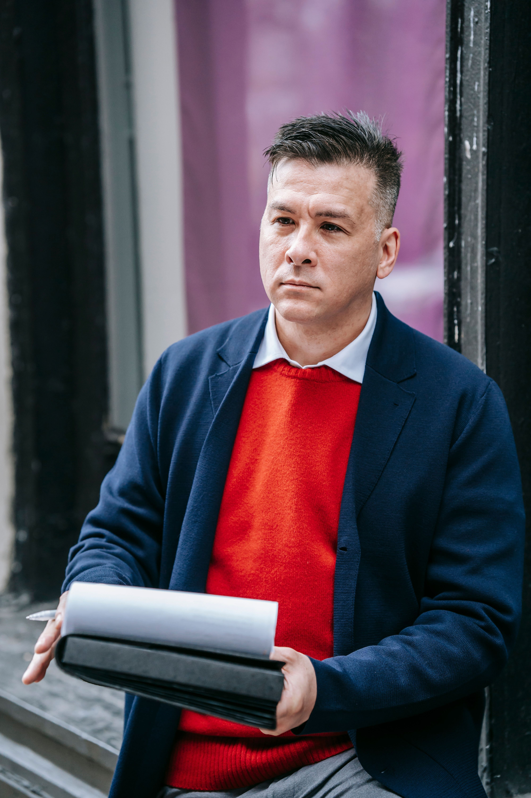

Luca Marchetti is the founder and head chef of his restaurant VillaSerenita, a business built from his passion
for authentic Italian cuisine and his desire to share the flavors and traditions of Italy with others.
Luca began his journey in the restaurant industry in 2015, when he was just 26 years old. From the beginning,
his vision was to create food that stayed true to the traditions of Italian cooking while bringing his own experience and passion to every dish.
In 2026, Luca took the next step in his journey by moving to South Africa and establishing a new branch of VillaSerenita.
This new chapter represents more than simply opening another restaurant—it is an opportunity for Luca to introduce South Africans
to the authentic flavors, traditions and hospitality of Italy.
His goal is to create an experience that goes beyond the food itself.
Through traditional recipes, quality ingredients and a genuine passion for Italian cooking,
Luca hopes to give South Africans the opportunity to experience Italy through every plate.
Bowen Higgins
Age: 31
Bowen Higgins has built his career around a passion for food, creativity, and the art
of bringing people together through exceptional dining experiences. As Sous Chef at VillaSerenita,
Bowen plays an important role in the kitchen, working alongside the culinary team to maintain high
standards of quality, consistency, and presentation.
Bowen's dedication to his craft can be seen in his approach to every dish. He values fresh
ingredients, attention to detail, and teamwork, while continually looking for ways to develop
his skills and bring new ideas to the kitchen.
At VillaSerenita, Bowen is proud to be part of a team that strives to create memorable experiences
for every guest. His goal is simple: to combine passion, creativity,
and great hospitality to make every meal special.
Franklin Sierra
Age: 45

At 45 years old, Franklin Sierra brings years of experience, dedication, and leadership to his role as General Manager
of VillaSerenita. With a strong passion for hospitality and creating memorable dining experiences,
Franklin takes pride in making sure every guest feels welcomed and valued.
As General Manager, Franklin oversees the daily operations of VillaSerenita,
supports his team, maintains high standards of service, and helps create the warm and inviting atmosphere
that makes the restaurant special.
Franklin believes that a successful restaurant is built on great food, exceptional service,
teamwork, and genuine connections with guests.
His commitment to these values continues to guide his work and contribute to the success of VillaSerenita.